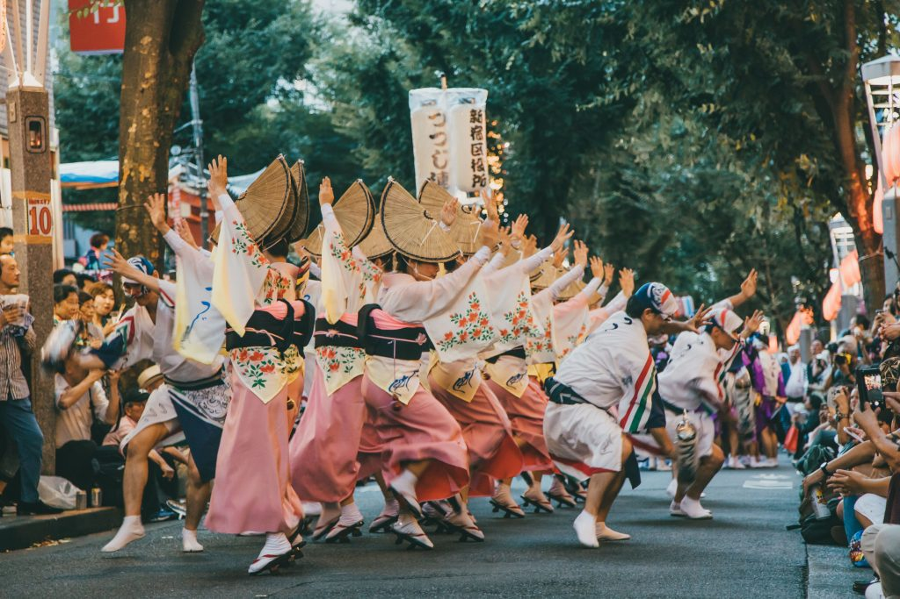

Culture in Japan (Festivals)
Japan is known for its rich cultural heritage and vibrant festivals. Here are some of the most famous ones:

Hanami (Cherry Blossom Festival)
Celebrated in spring, it's the viewing of cherry blossoms.
Tanabata (Star Festival)
Celebrated in July, it involves writing wishes on tanzaku.
Obon
A Buddhist festival in August honoring deceased ancestors.

Setsubun
Celebrated in February, it involves throwing beans to ward off evil spirits.
Gion Matsuri
A month-long festival in Kyoto featuring grand parades.

Shichi-Go-San
A festival for children aged three, five, and seven celebrated in November.
Japanese Cuisine
Japanese cuisine is known for its emphasis on fresh ingredients and seasonal flavors. Here are some traditional dishes:
Udon
Thick wheat noodles served in a savory broth.

Soba
Thin buckwheat noodles, often served cold or in broth.
Ramen
Chinese-style wheat noodles served in meat or fish-based broth.
Tempura
Battered and deep-fried vegetables or seafood.

Sushi
Vinegared rice paired with raw fish or vegetables.
Shopping in Japan
Japan offers a wide variety of shopping experiences, from traditional crafts to modern fashion. Here are some highlights:

Kimono
Traditional Japanese garment known for its beautiful designs.
Matcha
Finely ground green tea powder used in traditional tea ceremonies.
Japanese Ceramics
Handcrafted pottery and porcelain, often featuring intricate designs.
Katana
Traditional Japanese sword known for its craftsmanship.
Japanese Stationery
Unique and high-quality paper products and writing tools.
Traditional Toys
Handcrafted wooden toys and games that reflect Japanese culture.